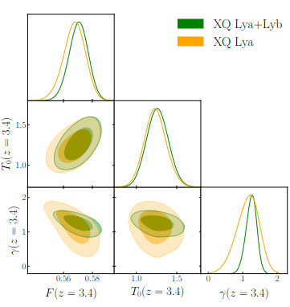
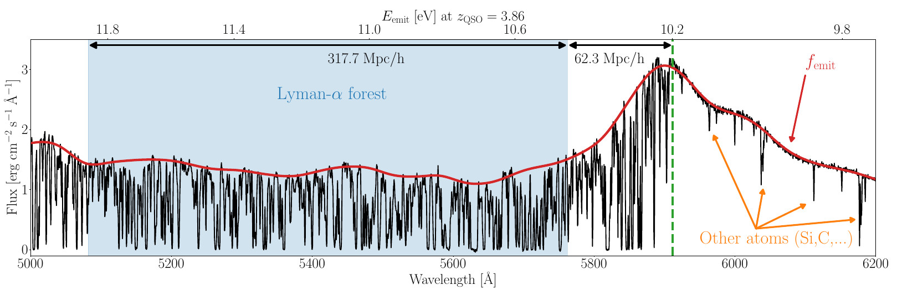

The Cosmic Dawn: Reionization & Thermal History
Pressure Smoothing & Thermal Memory
The Ringing of the Reionization (Iršič et al. 2026) uncovers a breakthrough in our ability to probe the early Universe by providing the first direct measurement of the intergalactic pressure smoothing scale at z > 4. This scale acts as a fossil record, or thermal memory, of the energy injected during the Epoch of Reionization. Unlike the instantaneous temperature, which cools rapidly, the physical smoothing of the gas—driven by hydrodynamic pressure—takes longer to settle. By analyzing a specific ringing feature in the 1D power spectrum (P1D) caused by peculiar velocities and the gas's response to heating, we can reconstruct the timing and intensity of the first ionizing sources. Furthermore, in Garcia-Gallego et al. 2025, we demonstrated that the high-z Lyman-α forest can serve as a powerful, independent cross-check for the optical depth to the Cosmic Microwave Background (τCMB), narrowing the window on when the Universe became fully transparent.

Patchy Reionization
Reionization was not a simultaneous global event but a messy, inhomogeneous process where bubbles of ionized hydrogen grew around the first galaxies. In Molaro, VI et al. 2022 , we investigated how these spatial fluctuations in the ionizing UV background and temperature leave distinct signatures on the Lyman-α forest. This work is critical for mapping the transition from a neutral to an ionized Universe, as it allows us to distinguish between different ionizing agents (such as galaxies vs. AGN). Expanding on this, Molaro, VI et al. 2023 utilized high-redshift P1D data to place the most stringent constraints to date on the patchiness remaining in the Intergalactic Medium (IGM) at z=4-5. These observations suggest a relatively late end to reionization, providing a vital link between the first light of the Cosmic Dawn and the structured Universe we observe today.

Lyman-β forest
At high redshifts (z > 3), the standard Lyman-α forest often becomes "saturated," where the absorption is so thick that information about the gas density is lost. To overcome this, I have worked on utilizing the Lyman-β forest as a more surgical probe of the high-redshift IGM (Wilson, VI et al. 2022). Because the Lyman-β transition has a smaller cross-section, it remains unsaturated at higher densities, offering a clearer view of the cosmic web's filaments. Early work in Iršič and Viel 2014 established the theoretical framework for using this secondary forest to break the degeneracy between the mean flux and the temperature-density relation. By combining α and β transmissions, we can precisely measure the thermal state of the IGM (T0 and γ), which is essential for constraining the properties of the ionizing background and dark matter models.

Source: Wilson, VI et al. 2022The Frontier: EQUALS & GHOSTLY
The next decade of discovery in the Cosmic Dawn relies on pushing the boundaries of spectral resolution and signal-to-noise. Projects like EQUALS (an ESO VLT survey) and GHOSTLY are designed to target the metal enrichment and opacity of the IGM at the very edge of the reionization epoch. Building on the foundational data analysis of the XQ100 Survey (Iršič et al. 2017), which provided high-quality spectra of 100 quasars, these new initiatives will resolve the small-scale structures of the IGM in unprecedented detail. These ground-truth observations are vital for refining our hydrodynamical simulations, allowing us to probe the nature of dark matter—specifically testing Warm Dark Matter models that suppress structure on small scales—and providing a definitive timeline for the thermal history of the Universe.
EQUALS Project (ESO Messenger)
Source: Vid Iršič (XQ100 Survey)